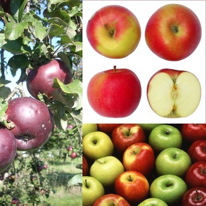

Documentacion de las Frutas
Las frutas son, quizás, los alimentos más llamativos por su diversidad de colores y formas. Pero además de lo que muestran a simple vista, forman parte de los alimentos con mayor cantidad de nutrientes y sustancias naturales altamente beneficiosas para la salud.
Si nos detenemos a pensar, veremos que las frutas y todos los vegetales, sobreviven a la intemperie, enfrentando todo tipo de condiciones y agresiones meteorológicas.
Todo ello es posible gracias a las sustancias protectoras y antioxidantes naturales que poseen. En definitiva esas mismas sustancias son las que nos protegen cuando consumimos el alimento.
Es decir que nos beneficiamos absolutamente con todas esas vitaminas y nutrientes que la fruta posee. Llenamos de vida todo nuestro organismo.

ARANDANO
El nombre arándano rojo hace referencia a un grupo de arbustos enanos perennes del género Vaccinium, subgénero Oxycoccus, aunque algunos botánicos consideran Oxycoccus un género aparte. Crecen en turberas de carácter ácido en las zonas más frías del Hemisferio Norte.
El arbusto del arándano rojo es bajo, con tallos de 10 cm o menos, con tallos finos y pequeñas hojas perennes. Las flores son de color rosa oscuro, con distintivospétalos "reflejados" que dejan el estilo y los estambres completamente expuestos, apuntando hacia delante. El fruto es una baya auténtica de tamano superior al de las hojas. Es inicialmente blanco, pero se vuelve rojo intenso al madurar. Es comestible, con un sabor ácido que puede enmascarar su dulzor.
Poviene de: Africa
FRAMBUESA
La frambuesa, conocida también como fresa del bosque, es un hermoso fruto del frambueso o sangüeso, planta que crece silvestre en todos los países de clima templado. Pertenece a la familia de las Rosáceas, que incluye más de 2.000 especies de plantas herbáceas, arbustos y árboles que crecen por las regiones templadas de todo el mundo. Las principales frutas europeas, además del rosal, pertenecen a esta gran familia. La frambuesa es una fruta muy utilizada en cientos de recetas que enriquecen la gastronomía típica de países del centro y del norte de Europa.

Poviene de: Inglaterra
FRESA
Fragaria, llamado comúnmente fresa o frutilla, es un género de plantas rastreras estoloniferas de la familia Rosaceae. Agrupa unos 400 taxones descritos, de los cuales solo unos 20 están aceptados.1 Son cultivadas por su fruto (eterio) comestible llamado de la misma manera, fresa o frutilla.
Las variedades cultivadas comercialmente son por lo general híbridos, en especial Fragaria x ananassa, que ha reemplazado casi universalmente a la especies silvestre locales, como la eurasiática Fragaria vesca, por el superior tamano de sus frutos.
Poviene de: La India
GROSELLA ESPINOSA
La grosella espinosa o también denominada agrazón o uva espina es una baya que según la especie puede ser blanca, amarilla, roja o verde, con una piel espinosa, vellosa o suave. Las diferentes variedades se diferencian entre sí por la época de maduración, sabor, color, tamano, forma del fruto y modo de consumo. Predomina el fruto amarillento con piel vellosa, aunque existen también variedades de piel rojiza, verde oscura y verde pálida blancuzca.
Poviene de: America
GROSELLA NEGRA
Originario de Europa oriental y central, pertenece al mismo género del grosellero común y se parece mucho a él. El casis tiene hojas lobuladas, dentadas, cuyo envéses pálido con glándulas secretoras amarillas. Las flores del casis son rojizas en el interior y verdosas por fuera, aracimadas con cáliz velloso, de mayor tamano que lacorola.
Su fruto es la grosella negra o zarzaparrilla negra, una baya que nace en racimo de granos negros, pulposos, con piel lisa y aromáticos, envueltos por los cálices de las flores de donde salen. El zumo de grosella negra es negruzco, acidulado y aromático. La planta (hojas, brotes y frutos) es muy apreciada en Francia por su utilización en repostería, como bebida alcohólica y en perfumería.
Poviene de: America central
GROSELLA ROJA
La planta es un arbusto caducifolio que suele alcanzar entre 1 y 1,5 m de altura, llegando ocasionalmente a los 2 m, con hojas de 5 lóbulos distribuidas en espiral en las ramas. Las flores son de un discreto color entre verde y amarillo, organizadas en racimos pendulosos de 4 a 8 cm y maduran produciendo unas bayascomestibles.
Su fruto es la grosella, o más concretamente la "grosella roja", también conocida como "zarzaparrilla roja" o "corinto", una baya ácida y comestible de color rojotranslúcido de entre 8 y 12 mm de diámetro, con entre 3 y 10 bayas en cada racimo.
Poviene de: Holanda
ZARZAMORA
La zarzamora es el fruto de la zarza, un arbusto que crece generalmente silvestre en muchas zonas del planeta. El fruto es una baya de color negro brillante formada por la unión de numerosos frutos pequenos que contienen cada uno una semilla. Es una fruta aromática y algo ácida.
Es una especie conocida desde muy antiguo, y a la que se le atribuyen muchos efectos curativos. Se consumen crudas, solas o acompanadas de helado, yogur o nata. También se emplean en la elaboración de macedonias, compotas, tartas, vinos y aguardiente, etc.
La zarzamora aporta mucha fibra y pocas calorías, al ser pobre en proteínas y grasas. Es destacable su riqueza en vitaminas, sobre todo A y C, y su alto contenido en potasio, lo que la hace diurética. También aporta diversas sustancias que tienen efectos anticancerígenos.
Poviene de: Chile
LIMON
Citrus × limon, el limonero, es un pequeno árbol frutal perenne que puede alcanzar más de 4 m de altura. Su fruto es el limón (laimún, del persalaimú o laimún) una fruta comestible de sabor ácido y extremadamente fragante que se usa en la alimentación. El limonero posee una madera con corteza lisa y madera dura y amarillenta muy apreciada para trabajos de ebanistería. Botánicamente, es una especie híbrida entre C. medica (cidro o limón francés) y C. aurantium(naranjo amargo).Aunque otros autores creen que es el resultado de diversos retrocruces entre Citrus medica y Citrus × aurantifolia.
Poviene de: Michoacan
MANDARINA
La mandarina es el fruto de las diferentes especies de cítricos llamados comúnmente mandarino, entre ellas Citrus reticulata, Citrus unshiu, Citrus reshni, así como sus híbridos, incluyendo Citrus × tangerina, cuya taxonomía está discutida. Pertenece al grupo de frutos llamados hesperidios y su pulpa está formada por un considerable número de gajos llenos de zumo o jugo; el cual contiene mucha vitamina C, flavonoides y aceites esenciales. Es el cítrico más parecido a la naranja, aunque de menor tamano, sabor más aromático y con mayor facilidad para quitar su piel en la mayoría de las variedades, así como una acidez ligeramente inferior y una mayor proporción de azúcares simples. Estas propiedades hacen que se considere una golosina natural de fácil consumo para jóvenes y ancianos.

Poviene de: Oriente
NARANJA
La naranja es una fruta cítrica comestible obtenida del naranjo dulce (Citrus × sinensis), del naranjo amargo (Citrus × aurantium) y de naranjos de otras especies o híbridos, antiguos híbridos asiáticos originarios de India, Vietnam o el sureste de China. Es un hesperidio carnoso de cáscara más o menos gruesa y endurecida, y su pulpa está formada típicamente por once gajos u hollejos llenos de jugo, el cual contiene mucha vitamina C, flavonoides y aceites esenciales.
Es más pequena y dulce que el pomelo o toronja y más grande, aunque menos perfumada, que la mandarina. Existen numerosas variedades de naranjas, siendo la mayoría híbridos producidos a partir de las especies Citrus maxima, Citrus reticulata (mandarina) y Citrus medica (cidro).

Poviene de: México
POMELO
El árbol del pomelo (Citrus × paradisi), a veces llamado pomelero o toronjo, es un árbol de la familia de las rutáceas, cultivado por su fruta que es el pomelo,toronja o pomelo rosado. Es un híbrido, probablemente producido de manera espontánea entre la pampelmusa y la naranja dulce (Citrus × sinensis) en las plantaciones del mar Caribe alrededor del siglo XVII.
En el breve período desde su descubrimiento ha ganado sin embargo gran favor y se consume fresca, cocida o en zumos y otras preparaciones, y es un cultivo importante en varios estados de Estados Unidos, en Sudamérica (Argentina , Uruguay , Paraguay e Israel.
El nombre «pomelo» proviene del idioma tamil (hablado en el sur de la India) பம்பளி மாசு pampa limāsu o ‘limón pomposo’ o ‘limón del Pampa’ (un río del sur de la India), transformado en el neerlandés pompelmoes (del neerlandés pompel: ‘grande’, y el portugués limões: ‘limones’), al italiano pompelmo, al inglés pommelo.

Poviene de: Africa
MELÓN
El Cucumis melo, más conocido como melón, es una planta herbácea monoica de tallos rastreros. Se cultiva por su fruto, una baya pepónide de temporada veraniega con un gran contenido de agua y de sabor dulce.
El melón ya se cultivaba en el Antiguo Egipto durante el III milenio a. C., y su cultivo se extiende por la mayoría de los continentes.

Poviene de: Occidente
SANDIA
Es una planta herbácea de ciclo anual, trepadora o rastrera, de textura áspera, con tallos pilosos provistos de zarcillos y hojas de cinco lóbulos profundos. Las floresson amarillas, grandes y unisexuales, las femeninas tienen el gineceo con tres carpelos, y las masculinas con cinco estambres. El fruto de la planta es grande (normalmente más de 4 kilos), pepónide, carnoso y jugoso (más del 90% es agua), casi esférico, de textura lisa y sin porosidades, de color verde en dos o más tonos. La pulpa es de color rojo - por el antioxidante licopeno (también presente en los tomates), y de carne generalmente de sabor dulce (más raramente amarilla y amarga) y muy apreciada por ser refrescante y rica en agua y sales y con esa pulpa se prepara un tipo de agua fresca. Se la suele considerar importante para dietas de adelgazamiento por contener pocas calorías. Las numerosas semillas pueden llegar a medir 1 cm de longitud, son de color negro, marrón o blanco y ricas envitamina E, se han utilizado en medicina popular, también se consumen tostadas como alimento.

Poviene de: Medio Oriente
AGUACATE
Es un árbol de hoja perenne que puede llegar a tener casi 20 m de altura, aunque su tamano normal se queda en una decena de metros, con corteza gris-verdoso, longitudinalmente fisurada. Las hojas, alternas, con peciolo de 2-5 cm y limbo generalmente glauco por el envés, estrechamente elípticos, ovados u obovados, de 8-20 por 5-12 cm, coriáceos, de color verde y escasamente pubescentes en la haz pero muy densamente por el envés que es de color marrón amarillento y donde resalta el nervio central; tiene base cuneiforme y ápice agudo, los márgenes enteros y más o menos ondulados.
Las inflorescencias son panículas de 8-14 cm de largo con flores de 5-6 mm con perianto densamente pubescente, de tubo muy corto y 6 tépalos oblongos de medio centímetro, los 3 exteriores más cortos. Tienen 9 estambres fértiles de unos 4 mm, con filamentos pubescentes, organizados en 3 círculos concéntricos. El ovario es ovoide, de unos 1,5 mm, densamente pubescente, con estilo también pubescente de 2,5 mm terminado por un estigma discoidal algo dilatado.

Poviene de: Michoacan
CARAMBOLA
La carambola es una fruta exótica muy cotizada en los mercados internacionales, conocida popularmente como "fruta estrella" o "star fruit".Pertenece a la familia de las Oxalidáceas. Además, en función de su procedencia, recibe distintos nombres: en la República Dominicana, "cinco dedos"; en Costa Rica, "tiriguro"; en Brasil, "caramboleiro" y en Venezuela, "tamarindo chino" o "tamarindo dulce". Es una fruta con una forma muy bonita, de gran empleo en la decoración de diversos platos exquisitos.

Poviene de: Sonora
COCO
El coco es una fruta tropical obtenida del cocotero (Cocos nucifera), la palmera más cultivada a nivel mundial. Tiene una cáscara exterior gruesa (Exocarpio) y unmesocarpio fibroso y otra interior dura, vellosa y marrón (endocarpio) que tiene adherida la pulpa (endospermo), que es blanca y aromática. Mide de 20 a 30 cm y llega a pesar 2,5 kg.
El principal producto exportado desde las distintas zonas de cultivo es la copra sin procesar, seguida del coco desecado. En ciertos países europeos, encuentra su mejor salida el coco fresco; el protagonista indiscutible de ferias y verbenas y de común uso en múltiples preparaciones de repostería artesanal e industrial. El mercado más interesante tanto en Asia como en Europa y Norteamérica es el del agua de coco envasada; de gran aceptación y mayor demanda cada ano. El agua de coco no debe ser confundida con la leche de coco, ya que la leche de coco se obtiene exprimiendo la pulpa y el agua de coco se encuentra naturalmente en su cavidad interior.
Poviene de: Acapulco
CHIRIMOYA
El chirimoyo es un árbol caducifolio de crecimiento lento, que puede adquirir en su madurez una altura de 7 a 8 m, y exuberante follaje; de porte erguido y a veces ramificado irregularmente. El tallo es cilíndrico, de corteza gruesa. Posee un sistema radicular muy superficial y ramificado, originando dos o tres pisos a diferentes profundidades, pero poco profundos.
Las hojas, con peciolos de 6-12 mm, son simples, enteras, muy finas, de disposición alterna y de forma ovalada u ovada-lanceolada y con el envés tomentoso. Las yemas son compuestas y pueden originar brotes mixtos (vegetativos y florales).
Las flores, de seis pétalos amarillentos jaspeados de púrpura, hermafroditas, son muy aromáticas, poco llamativas, solitarias o en ramilletes de dos o tres, sobre un corto e inclinado pedúnculo inserto en las axilas de las hojas. El cáliz consta de 3 sépalos de color verde oscuro, pequenos (2-4 mm) y de forma triangular.

Poviene de: Atlixco
DÁTIL
El dátil es una fruta obtenida de la palmera datilera (Phoenix dactylifera), alimento básico para países del Magreb. La fruta es considerada edulcorante por su cantidad de azúcar aproximadamente el 70%. Su nombre es derivado de la palabra griega("daktilos"), que significa "dedo".
Los mayores productores a nivel mundial han sido Irán e Irak (hasta la Guerra del Golfo). En California existe un importante cultivo de este fruto. Existen muchas variedades, entre ellas: Zahid, Medjool, Kadrawi, la más apreciada es la Deglet Nour.
Poviene de: Veracruz
FRUTA DE LA PASIÓN
La pasionaria es una enredadera trepadora; puede alcanzar los 9 metros de longitud en condiciones climáticas favorables, aunque su período de vida no supera por lo general la década. Su tallo es rígido y lenoso; presenta hojas alternas de gran tamano, perennes, lisas y de color verde oscuro. Una misma planta puede presentar hojas no lobuladas cuando se empieza a desarrollar, y luego hojas trilobuladas, por el fenómeno de heterofilia foliar. Las raíces, como es habitual en las trepadoras, son superficiales.
La flor se presenta individualmente; puede alcanzar los cinco centímetros de diámetro en las variedades silvestres, y hasta el doble en las seleccionadas por su valor ornamental. Es normalmente blanca, con tintes rosáceos o rojizos, en P. edulis; otras especies presentan colores que van desde el rojo intenso hasta el azul pálido.
La apariencia de la flor, similar a una corona de espinas, indujo a los colonizadores espanoles a denominarla el fruto de la pasión; su estructura pentarradial recibió una interpretación teológica, con los cinco pétalos y cinco sépalos simbolizando a los diez apóstoles (doce, menos Judas Iscariote y Pedro), mientras que los cinco estambres representarían los cinco estigmas. Finalmente, los tres pistilos corresponderían a los clavos de la cruz.
Poviene de: Nayarit
>KIWI
Su componente mayoritario es el agua. Es de moderado aporte calórico, por su cantidad de hidratos de carbono. Destaca su contenido en vitamina C; más del doble que una naranja, y vitaminas del grupo B, entre ellas el ácido fólico. Así mismo es rico en minerales como potasio, magnesio y fibra, soluble e insoluble, con un potente efecto laxante. La fibra mejora el tránsito intestinal. La vitamina C interviene en la formación de colágeno, huesos y dientes, glóbulos rojos y favorece la absorción del hierro de los alimentos y la resistencia a las infecciones.
El ácido fólico colabora en la producción de glóbulos rojos y blancos, en la síntesis material genético y la formación anticuerpos del sistema inmunológico. El magnesio se relaciona con el funcionamientode intestino, nervios y músculos, forma parte de huesos y dientes, mejora la inmunidad y posee un suave efecto laxante. El potasio es necesario para la transmisión y generación del impulso nervioso, para la actividad muscular normal e interviene en el equilibrio de agua dentro y fuera de la célula.

Poviene de: America central
LITCHI
El árbol es de hoja perenne y de tamano medio, alcanzando 15-20 m de altura. La fruta (que en realidad es una falsa fruta, compuesta por una cobertura carnosa llamada arilo) es una drupa que tiene 3-4 centímetros de longitud y unos 3 cm de diámetro. La parte exterior (epicarpio) es de color rojo y fácil de retirar. Elmesocarpio (interior) está formado por capas de pulpa blancas, dulces y translúcidas, ricas en vitamina C con una textura similar a la de la uva. En el centro se encuentra la semilla rodeada por un duro endocarpio.
Poviene de: Medio Oriente
MANGO
Suele ser un árbol leñoso, que alcanza un gran tamano y altura (puede superar los 30 m de altura, sobre todo, si tiene que competir por los rayos solares con árboles más grandes, como sería en una plantación de cocoteros), siempre y cuando sea en un clima cálido. En las zonas de climas templado puede cultivarse aunque no suele alcanzar una gran altura, por las incidencias climáticas que le resultan adversas. Es originario de la India y se cultiva en países de clima cálido además de algunos de climas templado como Cuba, Puerto Rico, Colombia, Guatemala, Venezuela, Panamá, Bolivia, Honduras, Costa Rica, El Salvador, Nicaragua, Paraguay,México, República Dominicana en la zona de clima subtropical, Argentina,Perú, Chile,China Ecuador en Espana se cultiva en la Costa Tropical de Granada. En Cuba se utiliza mucho pare elaborar refrescos y preservados, en el lugar con mas variedades de mangos, como el filipino, toledo, papelina, señora, bizcochuelo, hilacha, mango mamey, mango huebo de toro, mango macho entre otras variedadez, una de las zonas del mundo mas conocidas por sus mangos esta en la zona oriental del pais, Santiago de Cuba, El Caney. En la zona intertropical es una planta sumamente noble: no requiere de riego y resiste los incendios; una plantación de mangos difícilmente podría quemarse durante la época de sequía, ya que es el período de máximo crecimiento de biomasa para estos árboles y de mayor actividad de la fotosíntesis por la menor nubosidad. Es un árbol agresivo con otras especies para ocupar un espacio determinado.

Poviene de: Morelos
PAPAYA
La planta posee un tronco sin ramas (por lo general, sólo ramifica si su tronco es herido), de una altura entre 1,8 y 2,5 m, coronado por follaje en forma circular, provisto de largos pecíolos. El mismo conserva aún en los especímenes maduros una textura suculenta y turgente, escasamente blandosa, y presenta numerosas cicatrices características, producto del crecimiento y caída consecutivas del follaje superior. La savia es de consistencia lechosa (de aquí su nombre de lechosa), y tóxica en estado natural para el ser humano, pudiendo producir irritaciones alérgicas con el contacto con la piel. Esta savia lechosa contiene una enzima muy útil, lapapaína, empleada como ablandador de carnes: en las parrillas o barbacoas se emplea el jugo que fluye al cortar la corteza de la lechosa verde para rociarlo sobre la carne a la cual deja sumamente tierna y jugosa.

Poviene de: Durango
PINA
Aunque la mayoría de las bromeliáceas son epifitas, A. comosus es una planta vivaz, terrestre, aparentemente acaule, con una roseta basal de hojas rígidas, sésiles, lanceoladas, estrechamente imbricadas, con los márgenes dotados de espinas de puntas cortas, de 30 a 100 cm de largo; son ligeramente cóncavas, para conducir el agua de lluvia hacia la roseta. El tallo, rojizo, se hace visible alrededor de los 2 años, creciendo longitudinalmente hasta alcanzar entre 1 y 1,5 m. De las axilas foliares aparecen pequeños retoños que los cultivadores cortan para la reproducción, aunque si se dejan pueden producir más frutos. Del tallo brotan inflorescenciasen forma de espiga, con el tallo engrosado, formadas por varias docenas de flores trímeras de color violáceo, que aparecen al final de un escapo en las axilas de lasbrácteas. Las flores son hermafroditas, sésiles, con brácteas inconspicuas, los tépalos externos apenas asimétricos y libres, de ovario súpero. El período de floración se extiende por un mes o más; la planta es autoestéril, un rasgo seleccionado por los criadores para favorecer la reproducción vegetativa. La polinización está a cargo, en su entorno natural, de colibríes.
Poviene de: Chiapas
PLATANO
Se piensa que los plátanos tuvieron su origen aproximadamente entre el año 10000 y 5000 a.C. en el sureste de Asia; algunos científicos dicen que el plátano fue la primera fruta del mundo. Sin embargo, esos plátanos no eran como los conocemos hoy; ni siquiera eran comestibles.
El plátano que conocemos fue el resultado de injertar dos especies silvestres, algo que ocurrió mucho tiempo después del origen de la fruta salvaje. Los plátanos de la antigüedad eran de color rojo y verde, tenían semillas muy largas y un sabor no muy agradable.
Poviene de: Medio oriente
ALBARICOQUE
Es un árbol de unos 3-6 m de alto, caducifolio, inerme o algo espinoso, con las hojas, pecioladas y estipuladas que miden 5-10 por 3,5-8 cm, y son ovadas, suborbiculares o cordiformes, acuminadas, de margen doblemente aserrado, de haz y envés glabrescentes, rojizas cuando jóvenes, con algunas glándulas en la base del limbo. Las flores son solitarias o en fascículos de 2-6, subsésiles, con receptáculo de 5-7 mm, acopado o tubular, de interior anaranjado y exterior purpúreo o amarillento. Los sépalos, de 5-7 mm, son reflejos, de obovados a oblongos, de margen denticulado y subciliado, obtusos, purpúreos, mientras los pétalos miden 10-15 mm y son obovados, blancos o de un rosa pálido. El ovario es pubescente y da un un fruto de 3-6 cm, subgloboso o elipsoidal, velutino, amarillento o anaranjado, con un surco longitudinal.

Poviene de: Durango
CEREZA
Cereza, también conocido como guinda, es el nombre del fruto de varios árboles del género Prunus, aunque comercialmente se aproveche un número limitado de especies. Al árbol se le conoce comocerezo o guindo. Si bien todos las cerezos son del género Prunus, a éste pertenecen especies que no lo son, como el ciruelo, el almendro, el albaricoquero o damasco y el melocotonero o duraznero. La cereza es una fruta rica en vitaminas A, B, C, E, K y PP, en hierro, calcio, magnesio, potasio y azufre.

Poviene de: Puerto Rico
CIRUELA
La ciruela es la fruta del ciruelo, nombre común de varias especies arbóreas pertenecientes al subgénero Prunus. La ciruela eExisten ciruelas de muchas variedades, tanto de color como de tamaños. Unas tienen la pulpa (parte comestible) más firme que otras. Algunos tipos tienen la pulpa de color amarilla, blanca, verde y roja.
Entre las especies y variedades se encuentran: Prunus domestica subsp. domestica, a la que pertenecen la mayoría de la variedades comunes, Prunus domestica subsp. italica (Borkh.) Gams ex Hegi, (domestica × insititia o domestica × domestica var. insititia) a la que pertenece la ciruela claudia.

Poviene de: Occidente
HIGO
El higo es un «fruto» obtenido de la higuera (Ficus carica). Desde el punto de vista botánico el higo no es un fruto sino una infrutescencia (o sea un conjunto de frutos). Existen más de 750 especies de higos diferentes entre las que hay comestibles y no comestibles.
Esta «fruta» podría provenir de Asia occidental, aunque posteriormente se distribuyó por todo el Mediterráneo. Se sabe que el ser humano ya lo conocía y recolectaba antes del año 9000 a. C.
Los higos miden 6 ó 7 cm de largo y 4,5 a 5,5 cm de diámetro. Son muy estacionales y se pueden encontrar fácilmente en los meses de agosto y septiembre en el hemisferio norte, o febrero y marzo en el hemisferio sur.
Poviene de: America central
KAKI
Diospyros kaki, el caqui o palosanto, una especie arbórea de la familia de las Ebenáceas, originario de Asia. Su fruto, el caqui o pérsimo, es una baya comestible de sabor muy dulce.
Poviene de: Tonala
MANZANA
La manzana es una fruta pomácea comestible, fruto del manzano doméstico (Malus domestica), otros manzanos (especies del géneroMalus) o híbridos de aquel. En algunas zonas de Espana se le suele llamar pero cuando tiene forma alargada, aunque en muchas partes de Andalucía se llama indistintamente “pero” a la manzana.

Poviene de: México
MELOCOTÓN
El melocotón es el fruto del melocotonero, árbol de la familia de las Rosáceas. Esta familia incluye más de 2.000 especies de plantas herbáceas, arbustos y árboles distribuidos por regiones templadas de todo el mundo. Las principales frutas europeas, además del rosal, pertenecen a esta gran familia. Existen cientos de variedades que se han agrupado en cinco razas, cada una de ellas con características, periodo de maduración y aplicaciones propias. Las nectarinas y los paraguayos son de las más conocidas en el mercado español.
Poviene de: Cuba
NECTARINA
La nectarina es un fruto redondo, con carne jugosa, con hueso, parecido al melocotón. Su piel no es vellosa sino lisa como la de la ciruela y se puede consumir sin pelar o pelado. La época de recolección de la nectarina es durante el mes de mayo en el Hemisferio Norte, aunque se puede encontrar en los mercados durante todo al año ya que se cultiva en muchos países del mundo.
La nectarina es un fruto muy similar al melocotón. Realmente la nectarina es una variedad del melocotón, se trata de un melocotón sin vello o sin pelusa obtenido por mutación genética del gen de la pelusa por el gen de la piel suave, además tiene un color más vivo (entre rojo brillante y amarillo) y son generalmente más pequeños. Contrariamente a lo que la gente cree la nectarina no es un cruce entre melocotón y ciruela. Es una variedad espontánea de melocotón, de este modo los melocotones y las nectarinas son genéticamente equivalentes.
Poviene de: Veracruz
NIPERO
El níspero es el fruto del nisperero, árbol de la familia de las Rosáceas y se emplea también como planta ornamental. Esta familia incluye más de 2.000 especies de plantas herbáceas, arbustos y árboles distribuidos por regiones templadas de todo el mundo. Las principales frutas europeas, además del rosal, pertenecen a esta gran familia. Al níspero japonés no se le debe confundir con el níspero común o europeo ya que popularmente ambos se conocen como nísperos.
Poviene de: Vallarta
PERA
Se denomina pera al fruto de distintas especies del género Pyrus, integrado por árboles caducifolios conocidos comúnmente como perales. Sin embargo, cuando se trata del fruto comestible, se hace referencia mayormente al producido por el llamado peral común (Pyrus communis). La pera es una fruta jugosa, carnosa, y una de las más importantes producidas en las regiones templadas.

Poviene de: Sonora
UVA
La uva es una fruta obtenida de la vid. Las uvas vienen en racimos y son pequeñas y dulces. Se comen frescas o se utilizan para produciragraz, mosto, vino y vinagre.
Crecen agrupadas en racimos de entre 6 y 300 uvas. Pueden ser negras, moradas, amarillas, doradas, púrpura, rosadas, marrones, anaranjadas o blancas, aunque estas últimas son realmente verdes yevolutivamente proceden de las uvas rojas con la mutación de dosgenes que hace que no desarrollen antocianos, siendo estos los que dan la pigmentación.

Poviene de: Francia
ALMENDRA
La almendra es el fruto del almendro (Prunus dulcis). Posee una película de color canela que la envuelve, además de una cáscara exterior que no es comestible, cuando tiene un color rosado amarillento, y es de sabor dulce y que representa un peso importante de la almendra, por la cual la parte comestible de este fruto se reduce a un 40%.
Poviene de: Pueto rico
AVELLANA
La avellana es el fruto de tipo nuez del avellano común, Corylus avellana. Etimológicamente proviene del latín nux abellana, «fruto seco de Avella», pueblo de la provincia italiana de avellino. Tiene forma esferoidal, con un diámetro aproximado de 10 a 15 mm. Está formada por una cáscara fibrosa externa que rodea una cubierta lisa en la que se aloja la semilla. La cáscara fibrosa se seca durante la maduración.
Poviene de: Sinaloa
CACAHUATE
Es una hierba, anual, erecta a decumbente de 30-80 cm de altura, con tallos pubescentes de color amarillento, glabrescentes. Estípulas de 2-4 cm, pilosas. Hojas generalmente 4-folioladas con pecíolo de 4 a 10 cm, cubiertas con tricomas flexuosos largos, de margen ciliado y ápice obtuso o emarginado y mucronado. Brácteaslanceoladas de ápice acuminado. Flores de 8-10 mm con tubo del cáliz estrecho de 4-6 mm. Corola de color amarillo dorado; estándarte abierto y alas distintas, oblongas a ovadas; quilla distinta, muy ovada, más corta que las alas, con ápice acuminado a picudo. Ovario oblongo con el estilo terminado por un estigma pequeño, escasamente pubescentes.
Poviene de: México
CASTANA
La castana es el fruto del castaño (Castanea sativa), árbol de la familia de las fagaceae, nativo de climas templados del hemisferio norte. El fruto es una cápsula subglobosa muy espinosa (zurrón), dehiscente por 4 valvas, que mide entre 5-11 cm de diámetro y que contiene usualmente 2-3 aquenios que son las castanas propiamente dicho.
Poviene de: Nayarit
NUEZ
En botánica, una nuez se considera un fruto seco indehiscente, monospermo y con un pericarpio duro que deriva de un ovario ínfero cuya pared está endurecida. Se encuentran nueces en géneros del orden de las Fagales.
Poviene de: Medio oriente
PACANA
Es un fruto seco muy similar a la nuez por lo que se conoce como ‘nuez americana’ o ‘Nuez Pecan’. Se consume al natural y se utiliza para elaborar muchos postres.
Es una fuente importante de proteínas.
La pacana se consume principalmente al natural como aperitivo, aunque puede ser un buen ingrediente en la elaboración de algunas recetas y sobre todo postres, como tartas, pasteles y en helados. Es un fruto seco que se conoce como ‘nuez americana’ por su parecido a la nuez tradicional, aunque más alargada y de corteza lisa, y porque procede de América. La corteza o mesocarpio es leñoso, pero fino y fácil de romper cuando está maduro; la carne oendocarpio es blanco y de sabor agradable, cubierto por una piel fina de color marrón oscuro

Poviene de: Colombia
PISTACHO
Todos los frutos secos son buenos, pero algunos lo son más. Originario de Oriente, el pistacho es uno de los que más fibra y energía aporta, junto a nueces y piñones. Además, tiene un gran contenido en minerales, vitaminas, ácidos grasos, proteínas y micronutrientes saludables. 30 gr. de pistachos son 160 calorías, 3 gr. de fibra, 6 gr. de proteínas, 11 gr. de grasas sanas y ninguna saturadaTomados regularmente y con moderación, los pistachos ayudan a prevenir el cáncer y la diabetes, a perder peso, a bajar el colesterol, a combatir el estrés y a mejorar el estado cardiovascular. La doctora Nieves Palacios, experta del Centro de Medicina del Deporte de Madrid, destaca "las propiedades nutricionales del pistacho", ya que una ración de 30 gramos (unas 50 unidades de este alimento) contiene 160 calorías, 3 gramos de fibra, 6 gramos de proteínas, 7 gramos de grasas monoinsaturadas y 4 gramos de poliinsaturadas, pero ninguna grasa saturada.

Poviene de: México